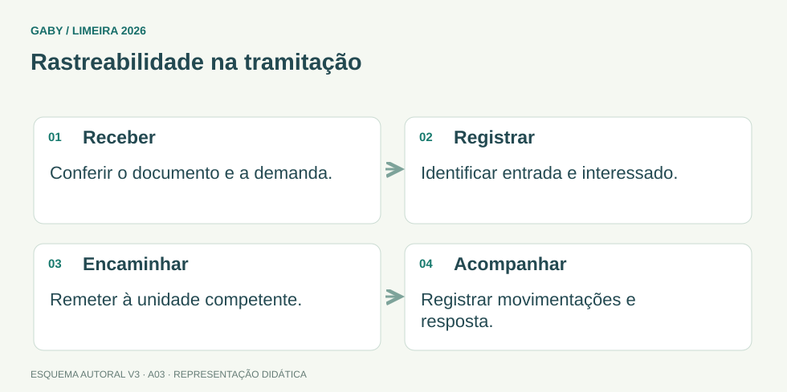

Objetivos do módulo
- Entender o ciclo documental de um processo administrativo.
- Distinguir autuação, registro, numeração, instrução e encaminhamento.
- Aplicar rastreabilidade e controle de tramitação.
- Descrever as atividades de protocolo e as regras de autuação, numeração de folhas, despacho, juntada e volumes da Portaria Interministerial MJ/MP nº 1.677/2015.
- Localizar na Lei 9.784/1999 as regras de início do processo, interessados, competência, impedimento e suspeição, forma dos atos, intimação, instrução, decisão, motivação, extinção, anulação, revogação, convalidação, recursos e revisão.
- Diferenciar os prazos da Lei 9.784/1999: três dias úteis, cinco dias, dez dias, trinta dias e cinco anos.
Rastreabilidade na tramitação

Descrição em texto do esquema
- Receber: Conferir o documento e a demanda.
- Registrar: Identificar entrada e interessado.
- Encaminhar: Remeter à unidade competente.
- Acompanhar: Registrar movimentações e resposta.
Oficina visual · aplique o esquema
Um processo foi encaminhado sem data, destino ou identificação do responsável. Qual problema isso cria?
Atividade autoral complementar da V3. Registre sua resposta; a resolução está no arquivo de gabarito e revisão.
Mapa do conteúdo
- 1. Do documento ao processo
- 2. Autuação
- 3. Registro e numeração
- 4. Instrução e formalização
- 5. Encaminhamento e tramitação
- 6. Rastreabilidade
- 7. Juntada, desentranhamento, desmembramento e volumes
- 8. Lei 9.784/1999: alcance, início do processo e interessados
- 9. Lei 9.784/1999: competência, impedimento e suspeição
- 10. Lei 9.784/1999: forma, tempo, lugar e comunicação dos atos
- 11. Lei 9.784/1999: instrução, decisão, motivação e extinção
- 12. Lei 9.784/1999: anulação, revogação, convalidação, recursos e prazos
1. Do documento ao processo
Um processo administrativo reúne documentos e registros relacionados a uma demanda para permitir análise, decisão e comprovação dos atos. O fluxo deve preservar identidade, ordem, integridade e rastreabilidade.
Normas que a banca usa neste assunto
As questões deste assunto saem de três normas federais. Guarde o que cada uma regula.
| Norma | O que regula | Observação |
|---|---|---|
| Portaria Interministerial MJ/MP nº 1.677/2015 | Procedimentos gerais das atividades de protocolo: recebimento, classificação, registro, distribuição, controle da tramitação, expedição, autuação, numeração de folhas, despacho, juntada e volumes. As regras estão no Anexo. | É de observância obrigatória nos órgãos e entidades da Administração Pública Federal (art. 1º). Vale para documentos avulsos e processos, em qualquer suporte (art. 1º, §2º). Provas municipais copiam suas definições. |
| Lei 9.784/1999 | O processo administrativo no âmbito da Administração Pública Federal, direta e indireta (art. 1º). | Não é lei municipal. A banca a usa como parâmetro para estados e municípios que não têm lei própria de processo administrativo. Por isso os enunciados dizem “órgão federal” ou “segundo a Lei 9.784/1999”. |
| Lei 8.159/1991 | A política nacional de arquivos públicos e privados. | O art. 3º define gestão de documentos; o art. 8º separa os documentos públicos em correntes, intermediários e permanentes. |
Documento avulso, processo e protocolo
O glossário do Anexo da Portaria 1.677/2015 (item 4) fixa o vocabulário que as provas cobram.
| Termo | Significado |
|---|---|
| Documento avulso | Informação registrada, em qualquer suporte ou formato, que não está reunida e ordenada em processo. Exemplo: um ofício ou um requerimento que acabou de chegar. |
| Processo | Conjunto de documentos avulsos oficialmente reunidos e ordenados no decurso de uma ação administrativa. |
| Unidade de protocolo | Unidade encarregada de receber, classificar, registrar, distribuir, controlar a tramitação e expedir documentos e processos. |
| Unidade protocolizadora | Faz tudo o que a unidade de protocolo faz e, além disso, autua documentos avulsos para formar processos e atribui o Número Único de Protocolo (NUP). |
| Registro | Cadastramento das informações para controlar a tramitação dos documentos produzidos e recebidos. |
| Distribuição | Primeira tramitação do documento ou processo para o destinatário, dentro do órgão. |
| Tramitação (ou movimentação) | Curso do documento ou processo desde a produção ou o recebimento até o cumprimento de sua função administrativa. |
| Interessado | Pessoa física ou jurídica diretamente afetada pelas decisões tomadas sobre o objeto do documento ou processo. |
Atividades de protocolo (Portaria 1.677/2015, Anexo, item 2)
São sete atividades. A ordem em que o texto as enumera acompanha o caminho do documento dentro do órgão:
| Atividade | O que se faz | Não confunda com |
|---|---|---|
| Recebimento | Entrada controlada do documento que chega ao órgão, de origem interna ou externa. É a fase inicial: o protocolo confere o que chegou antes de qualquer outra providência. | Expedição, que é a saída. |
| Classificação | Atribuição de um código e de um descritor conforme o assunto (função ou atividade) do documento. | Classificação de sigilo, que segue legislação própria. |
| Registro | Cadastro dos dados identificadores no sistema informatizado ou, excepcionalmente, em formulário. | Autuação: registrar não forma processo. |
| Distribuição | Primeira remessa ao destinatário dentro do órgão, com registro. | Expedição, que é a remessa de saída. |
| Controle da tramitação | Registro de cada movimentação: quem enviou, para quem, quando e quem recebeu. | — |
| Expedição | Remessa do documento ou processo ao destinatário, com registro e acondicionamento seguro. É a saída do documento. | Arquivamento, que é a guarda quando a tramitação cessou. |
| Autuação | Reunião e ordenação de documentos avulsos para formar um processo. | Registro simples de documento que não precisa virar processo. |
Gestão de documentos e o papel do protocolo
A gestão de documentos começa na produção e passa pela tramitação. O protocolo atua exatamente nesse início: recebe, registra e controla o fluxo. Por isso se diz que ele assegura o controle dos documentos desde a origem e que suas atividades são indispensáveis à política de gestão documental.
O objetivo declarado do Anexo da Portaria 1.677/2015 (item 1) é a padronização dos procedimentos de protocolo. Quando todas as unidades registram, numeram e encaminham do mesmo modo, qualquer servidor localiza um documento (rastreabilidade), o trabalho não precisa ser refeito e a informação circula mais rápido.
2. Autuação
Autuar é formalizar a abertura do processo a partir de documentação inicial, atribuindo identificação e organizando seus elementos conforme regras do órgão/sistema. A autuação transforma a demanda em unidade processual controlável.
Autuação na Portaria 1.677/2015 (Anexo, item 2.6)
Para a Portaria, autuação é o ato de reunir e ordenar os documentos avulsos recebidos na unidade protocolizadora, para formar um processo.
- Quando é obrigatória: quando o assunto, tema ou solicitação exigir análises, informações, despachos, pareceres ou decisões administrativas. Um convite ou um informativo que só precisa ser lido é registrado, mas não vira processo.
- Como o processo pode ser iniciado: pela unidade protocolizadora, quando houver regulamentação interna; por solicitação da unidade administrativa, mediante despacho da autoridade competente; ou por requerimento do interessado.
- Quem autua: o processo em papel (não digital) só pode ser autuado pela unidade protocolizadora. No processo digital, um usuário autorizado pode autuar no sistema, com monitoramento da unidade protocolizadora.
- Com que documento: sempre que possível, com o documento original.
Passos da formação do processo em papel (item 2.6.1)
- Prender os documentos na capa padronizada do processo, em ordem cronológica, do mais antigo para o mais recente.
- Colar na capa a etiqueta com: nome do órgão, nome da unidade protocolizadora, número do processo (NUP), data de autuação, nome do interessado e código de classificação ou assunto.
- Apor, no canto superior direito da frente da primeira folha, o carimbo ou etiqueta de autuação (órgão, NUP, data, assinatura e matrícula do servidor).
- Numerar as folhas com o carimbo específico de numeração (regras do item 2.7.1, na seção 3).
- Apor na última folha autuada o carimbo que marca o fim do trabalho do protocolo (data, número da folha, NUP e assinatura).
- Identificar, na capa, no campo de registro da tramitação, a unidade administrativa para a qual o processo será distribuído. Esse campo é preenchido de novo a cada movimentação.
- Registrar a operação no sistema informatizado ou, excepcionalmente, em formulário.
- Enviar o processo à unidade destinatária.
3. Registro e numeração
Registro insere dados essenciais no sistema/livro de protocolo: interessado, assunto, origem, data, número e outros campos. Numeração permite individualizar e recuperar o processo. Evite duplicidades e alterações sem trilha de auditoria.
Recebimento, classificação e registro (Portaria 1.677/2015, Anexo, item 2.1)
O recebimento é a porta de entrada. No documento em papel (subitem 2.1.1), o protocolo confere, nesta ordem lógica:
- se o documento se destina mesmo ao órgão; se não, devolve;
- se o invólucro (envelope, pacote) está íntegro; havendo dano, registra o fato e comunica à autoridade;
- se o documento é oficial ou particular, ostensivo ou sigiloso;
- se está marcado como “Urgente”, para ter prioridade na classificação, no registro e na distribuição;
- se os anexos e volumes indicados vieram junto;
- se o documento deve ser autuado, conforme a regulamentação interna.
Depois o documento é classificado e registrado. O registro traz estes dados identificadores: espécie ou tipo do documento; número e data de produção; data de recebimento; indicação de que é documento avulso ou processo; NUP; número de anexos e de volumes; código de classificação ou assunto; remetente, interessado ou representante legal; e destinatário.
Só então vem a distribuição. A sequência dos itens 2 e 2.1 é: receber → classificar → registrar → autuar, se o caso exigir processo → distribuir. Documento externo que chega não vai direto à mesa do destinatário nem ao arquivo: primeiro é registrado e, quando exige análise ou decisão, autuado.
Número de protocolo (NUP)
O número de protocolo identifica o documento ou processo e permite rastrear sua movimentação: com ele se consulta onde o documento está, por onde passou e quem o recebeu. Na Administração Federal ele se chama Número Único de Protocolo (NUP). Segundo o item 2 do Anexo, recebem NUP todos os processos e os documentos avulsos que demandem análise, informação, despacho, parecer ou decisão e precisem tramitar, além dos que vieram de outro órgão sem NUP.
O número de protocolo não define o grau de sigilo, não dá validade jurídica ao documento, não fixa prazo de resposta e não classifica por assunto. Cada uma dessas coisas tem critério próprio.
Numeração de folhas (Portaria 1.677/2015, Anexo, item 2.7.1)
A numeração de folhas vale para o processo em papel. Quem começa é a unidade protocolizadora; cada unidade que acrescenta folhas continua a sequência.
| Regra | Detalhe |
|---|---|
| Onde vai o número | No carimbo específico de numeração, aposto no canto superior direito da frente da folha. O carimbo traz a sigla da unidade, o nome do órgão, o número da folha e a rubrica de quem numerou. |
| Ordem | Crescente, sem saltos. |
| Capa | Não é numerada (alínea a). |
| Primeira folha | Não recebe o carimbo de numeração; recebe o carimbo de autuação. A segunda folha recebe o carimbo de numeração com o número 2 (alíneas b e c). |
| Verso | Não é numerado. Para citá-lo, usa-se o número da folha seguido da letra “v”: “fl. 14v” (alínea d). |
| Erro de quem está numerando | Inutiliza-se o número errado com um “X” e apõe-se novo carimbo com o número certo (alínea e). |
| O que é proibido | Repetir número, rasurar, usar líquido corretivo e diferenciar folhas com letras e números, como “15-A” e “15-B” (alínea f). |
| Correção de numeração | Toda correção é registrada e justificada por despacho no próprio processo (alínea i). |
| Espaço em branco | O espaço que sobrar na frente ou no verso é inutilizado com um traço diagonal, para impedir inclusão indevida de informações (alínea j). |
| Verso sem informação | Recebe o carimbo “Em Branco” (alínea k). As provas também escrevem “Em branco”. |
No processo digital não se numeram folhas (item 2.7.2). O sistema garante que os documentos tenham numeração sequencial, sem falhas e sem repetição, e que todo documento novo entre depois do último.
Despacho e folha de despacho (Portaria 1.677/2015, Anexo, item 2.9.1)
Despacho é a forma pela qual a autoridade dá continuidade a uma ação administrativa ou decide em um documento ou processo (item 2.9). Pode ser informativo (de mero expediente, só dá andamento) ou decisório.
No processo em papel, toda solicitação ou informação é registrada por despacho na última folha do processo ou em folha de despacho. Podem ser acrescentadas quantas folhas de despacho forem necessárias, sempre carimbadas, numeradas em sequência e rubricadas. Não existe folha de despacho “número zero” colocada no início.
Juntando os itens 2.7.1 e 2.9.1: a folha de despacho é usada na frente e no verso; só se inclui nova folha depois do total aproveitamento da anterior; se for preciso inserir outro documento antes de a folha estar cheia, o espaço que sobrou é inutilizado e o verso sem informação leva o carimbo “Em Branco”. Para cancelar um despacho, a autoridade faz dois traços em diagonal, escreve “SEM EFEITO”, data, assina e carimba.
4. Instrução e formalização
Instruir é reunir documentos, informações, manifestações e evidências necessárias para análise. Formalização exige que atos sejam identificáveis, datados e associados ao processo, respeitando procedimentos internos.
A Lei 9.784/1999 traz as regras gerais de forma dos atos: são escritos, em vernáculo (língua portuguesa), com data, local e assinatura da autoridade responsável, e o processo tem as páginas numeradas em sequência e rubricadas (art. 22, §§1º e 4º). As regras de instrução — quem produz a prova, quais provas são recusadas, vista dos autos — estão nos arts. 29 a 47, detalhados na seção 11.
5. Encaminhamento e tramitação
Encaminhar é remeter o processo ao setor competente, registrando origem, destino, data e, quando necessário, motivo. O controle de tramitação permite saber onde o processo está e quem recebeu.
Distribuição e controle da tramitação (Portaria 1.677/2015, Anexo, itens 2.2 e 2.3)
A Portaria proíbe a tramitação de documento ou processo sem registro no instrumento de encaminhamento e controle (sistema informatizado ou, excepcionalmente, formulário). O registro de cada movimentação traz:
- identificação do documento pelo NUP;
- remetente, interessado ou representante legal, e destinatário;
- especificações do documento (espécie, número, data, anexos, volumes, classificação ou assunto);
- data do encaminhamento e identificação de quem encaminhou;
- data do recebimento e identificação de quem recebeu;
- providências a adotar, quando couber.
Expedição (item 2.4)
Expedir é remeter o documento ou processo ao destinatário; é a saída, enquanto a distribuição é a primeira tramitação dentro do órgão. Antes de sair, o documento é classificado e registrado; o protocolo confere se os anexos e volumes estão completos, registra a expedição e acondiciona o material em invólucro, com medidas de segurança contra perda ou extravio. A etiqueta do invólucro leva os dados do destinatário na frente e os do remetente no verso.
Correspondência oficial: remetente e destinatário
Toda correspondência oficial precisa identificar quem envia (remetente) e a quem se dirige (destinatário). São esses dois dados que o protocolo usa para registrar a origem e definir o destino; sem eles não há como distribuir, responder ou devolver. Carimbo de urgência, anexos, quantidade de páginas e assinatura com certificado digital dependem do caso: não são exigidos de toda correspondência.
Recebimento, expedição e arquivamento
| Etapa | Momento | O que acontece |
|---|---|---|
| Recebimento | Início do fluxo | O documento entra no órgão e é conferido. |
| Expedição | Saída | O documento é remetido ao destinatário, com registro e invólucro identificado. |
| Arquivamento | Fim da tramitação | Guarda do documento cuja tramitação cessou, por despacho da autoridade (item 2.16). Ocorre por deferimento ou indeferimento do pedido, por desistência ou renúncia expressa do interessado ou por decisão motivada da autoridade competente. |
6. Rastreabilidade
Rastreabilidade é a capacidade de reconstruir o histórico: criação, movimentações, responsáveis e alterações. Em ambiente eletrônico, logs e metadados cumprem papel importante; em papel, protocolos e registros de carga cumprem função semelhante.
7. Juntada, desentranhamento, desmembramento e volumes
Depois de autuado, o processo recebe novos documentos, pode ser unido a outros e pode perder folhas, sempre com despacho, termo próprio e registro. As regras estão nos itens 2.8 e 2.10 a 2.13 do Anexo da Portaria 1.677/2015.
Juntada: anexação e apensação (item 2.10)
Juntada é a união de processo a processo ou de documento avulso a processo. Há duas espécies.
| Ponto | Juntada por anexação (item 2.10.1) | Juntada por apensação (item 2.10.2) |
|---|---|---|
| Caráter | Definitivo. | Temporário. |
| Finalidade | Dar continuidade à ação administrativa. | Estudo, instrução e uniformidade de tratamento em matérias semelhantes. |
| O que se junta | Documento avulso a processo, ou processo a processo. | Somente processo a processo. |
| Interessado e assunto | Mesmo interessado e mesmo assunto. | Matérias semelhantes, do mesmo interessado ou não. |
| Processo principal | O mais antigo, cujo número prevalece. | O que contém o pedido de apensação; não é necessariamente o mais antigo. |
| Identidade dos processos | O documento ou processo anexado passa a compor o processo principal. | Cada processo conserva identidade, independência e numeração de folhas; tramitam juntos, e folhas novas entram só no principal. |
| Como se desfaz | Não se desfaz; só cabem desentranhamento e desmembramento. | Pela desapensação (item 2.11), que deve ocorrer antes do arquivamento. |
Quem executa: a juntada de processo a processo em papel é feita somente pela unidade protocolizadora. A juntada de documento avulso a processo pode ser feita pela unidade administrativa onde o processo está sendo instruído, e começa por um despacho que informa quais documentos serão anexados.
Desentranhamento e desmembramento (itens 2.12 e 2.13)
| Operação | O que é | Regras comuns |
|---|---|---|
| Desentranhamento | Retirada definitiva de folhas ou documentos do processo, com justificativa. Ocorre por interesse do órgão, a pedido do interessado, por anexação indevida ou duplicada, ou quando o original precisa ser usado junto a terceiros ou em outro processo. | Só a unidade protocolizadora executa (em papel), mediante despacho da autoridade competente que justifique a operação. O processo conserva a numeração original, sem renumerar as folhas restantes. É vedado retirar o documento que deu origem ao processo. |
| Desmembramento | Retirada definitiva de folhas ou documentos, com justificativa, para formar um novo processo. | As mesmas da linha acima. |
Encerramento e abertura de volumes (item 2.8)
- Cada volume do processo em papel tem, no máximo, duzentas folhas, incluído o Termo de Encerramento de Volume.
- Se a inclusão de um documento fizer o volume passar de duzentas folhas, a autoridade pede ao protocolo, por despacho, a abertura de novo volume. O volume anterior é encerrado com as folhas que tiver; não se divide o documento novo entre dois volumes.
- O Termo de Encerramento é a última folha do volume. O Termo de Abertura é a primeira folha do novo volume, e a numeração continua a sequência do volume anterior.
- Exceção: admite-se ultrapassar as duzentas folhas para incluir documento de até vinte folhas que conclua o processo.
- Documento que, sozinho, tem mais de duzentas folhas é dividido.
- Os volumes de um processo tramitam juntos.
8. Lei 9.784/1999: alcance, início do processo e interessados
A Lei 9.784/1999 regula o processo administrativo no âmbito da Administração Pública Federal, direta e indireta (art. 1º). Aplica-se também aos órgãos dos Poderes Legislativo e Judiciário da União quando exercem função administrativa (art. 1º, §1º). A banca a usa como parâmetro para estados e municípios sem lei própria de processo administrativo. Processos com lei específica continuam regidos por ela; a Lei 9.784/1999 entra de forma subsidiária (art. 69).
Os artigos cobrados nesta aula mantêm a redação original de 1999. A lei recebeu acréscimos que não os alteram: o §3º do art. 56 e os arts. 64-A e 64-B (Lei 11.417/2006, súmula vinculante), o art. 69-A (Lei 12.008/2009, prioridade de tramitação para pessoa com 60 anos ou mais, pessoa com deficiência ou com doença grave) e os arts. 49-A a 49-G (Lei 14.210/2021, decisão coordenada).
Conceitos e direitos básicos (arts. 1º a 3º)
| Dispositivo | O que determina | Como cai |
|---|---|---|
| Art. 1º, §2º | Órgão é a unidade de atuação integrante da estrutura da Administração; entidade é a unidade dotada de personalidade jurídica; autoridade é o servidor ou agente público dotado de poder de decisão. | Atendente que só recebe papéis não é “autoridade”. |
| Art. 2º, parágrafo único, XI e XII | É proibida a cobrança de despesas processuais, salvo as previstas em lei; o processo é impulsionado de ofício, sem prejuízo da atuação dos interessados. | Depois de iniciado, o processo anda por iniciativa da própria Administração. |
| Art. 3º, II e IV | O administrado tem direito de ter ciência da tramitação, ter vista dos autos, obter cópias e conhecer as decisões; pode fazer-se assistir por advogado, de forma facultativa, salvo quando a lei exigir representação. | Exigir advogado para protocolar ou receber resposta é erro: a assistência é facultativa. |
Início do processo e requerimento (arts. 5º a 8º)
| Dispositivo | O que determina | Como cai |
|---|---|---|
| Art. 5º | O processo começa de ofício ou a pedido do interessado. “De ofício” significa por iniciativa da própria Administração, sem que alguém peça. | Um órgão que descobre sozinho uma irregularidade pode abrir o processo. Não depende de requerimento, de advogado nem de ordem judicial. |
| Art. 6º, caput e incisos I a V | O requerimento inicial é escrito, salvo quando se admite solicitação oral, e contém: órgão ou autoridade a que se dirige; identificação do interessado ou de quem o represente; domicílio ou local para receber comunicações; pedido, com exposição dos fatos e fundamentos; data e assinatura. | Lista de dados do requerimento. Reconhecimento de firma não está na lista. |
| Art. 6º, parágrafo único | O servidor não pode recusar o recebimento de documentos sem motivo e deve orientar o interessado a suprir as falhas. | Requerimento com falha sanável: recebe-se e orienta-se. Receber não é deferir o pedido. |
| Art. 7º | Órgãos e entidades devem elaborar modelos ou formulários padronizados para assuntos que envolvam pretensões equivalentes. | Formulário padrão é dever da Administração. |
| Art. 8º | Havendo pluralidade de interessados com pedidos de conteúdo e fundamentos idênticos, os pedidos podem ser formulados em um único requerimento, salvo preceito legal em contrário. | Vinte moradores com o mesmo pedido e os mesmos fundamentos podem assinar um requerimento único. Não se exige um processo por pessoa. |
Interessados e capacidade (arts. 9º e 10)
| Dispositivo | O que determina | Como cai |
|---|---|---|
| Art. 9º, I | É interessado quem inicia o processo como titular de direitos ou interesses individuais, ou no exercício do direito de representação. | O requerente. |
| Art. 9º, II | Também é interessado quem, sem ter iniciado o processo, tem direitos ou interesses que possam ser afetados pela decisão. | Quem não pediu nada, mas pode ser afetado, participa. É errado dizer que só o requerente inicial é interessado. |
| Art. 9º, III e IV | Organizações e associações representativas, quanto a direitos e interesses coletivos; pessoas ou associações legalmente constituídas, quanto a direitos ou interesses difusos. | Associação de moradores pode figurar como interessada. |
| Art. 10 | São capazes, para o processo administrativo, os maiores de dezoito anos, ressalvada previsão especial em ato normativo próprio. | A idade é 18 anos. Alternativas com 16 ou 21 anos estão erradas. |
9. Lei 9.784/1999: competência, impedimento e suspeição
Competência, delegação e avocação (arts. 11 a 17)
Competência é o poder que a lei dá a um órgão ou autoridade para praticar determinado ato. Quem a recebe não escolhe se vai exercê-la.
| Dispositivo | O que determina | Como cai |
|---|---|---|
| Art. 11 | A competência é irrenunciável e se exerce pelos órgãos a que foi atribuída como própria, salvo os casos de delegação e avocação legalmente admitidos. | A autoridade não pode “abrir mão” da competência por excesso de serviço ou por comunicado verbal. |
| Art. 12 | Não havendo impedimento legal, o órgão e seu titular podem delegar parte da competência a outros órgãos ou titulares, ainda que não lhes sejam hierarquicamente subordinados, quando for conveniente por circunstâncias de índole técnica, social, econômica, jurídica ou territorial. | A delegação é parcial e não exige subordinação hierárquica. |
| Art. 13, I a III | Não podem ser objeto de delegação: a edição de atos de caráter normativo; a decisão de recursos administrativos; as matérias de competência exclusiva do órgão ou autoridade. | Três matérias indelegáveis. A mais cobrada: decidir recurso administrativo. |
| Art. 14, caput e §§1º a 3º | O ato de delegação e sua revogação são publicados no meio oficial. O ato especifica as matérias e poderes transferidos, os limites, a duração, os objetivos e o recurso cabível (§1º). A delegação é revogável a qualquer tempo pela autoridade delegante (§2º). A decisão tomada por delegação menciona essa qualidade e considera-se editada pelo delegado (§3º). | Não existe delegação nem revogação “verbal” ou sem publicação. Não existe delegação irrevogável. |
| Art. 15 | Admite-se, em caráter excepcional e por motivos relevantes devidamente justificados, a avocação temporária de competência atribuída a órgão hierarquicamente inferior. | Avocação é temporária, excepcional, justificada e sempre de cima para baixo. |
| Art. 17 | Não havendo competência legal específica, o processo é iniciado perante a autoridade de menor grau hierárquico para decidir. | Não é a autoridade máxima nem qualquer servidor: é a de menor grau entre as que têm poder de decisão. |
| Ponto | Delegação | Avocação |
|---|---|---|
| Sentido | A autoridade transfere parte de sua competência a outro órgão ou titular. | A autoridade superior chama para si competência de órgão inferior. |
| Hierarquia | Dispensa subordinação. | Exige que o órgão seja hierarquicamente inferior. |
| Duração | A fixada no ato; revogável a qualquer tempo. | Temporária. |
| Requisito | Conveniência técnica, social, econômica, jurídica ou territorial; publicação. | Caráter excepcional e motivos relevantes justificados. |
Impedimento e suspeição (arts. 18 a 21)
| Dispositivo | O que determina | Como cai |
|---|---|---|
| Art. 18, I a III | É impedido de atuar o servidor ou autoridade que: tenha interesse direto ou indireto na matéria (I); tenha participado ou venha a participar como perito, testemunha ou representante, ou se isso ocorre com cônjuge, companheiro ou parente e afins até o terceiro grau (II); esteja litigando, judicial ou administrativamente, com o interessado ou seu cônjuge ou companheiro (III). | O interesse indireto também impede. “Só o interesse direto impede” é falso. |
| Art. 19, caput e parágrafo único | Quem incorre em impedimento deve comunicar o fato à autoridade competente e abster-se de atuar. Omitir a comunicação é falta grave, para efeitos disciplinares. | Conduta correta: comunicar e abster-se. Não se espera alguém reclamar. |
| Art. 20 | Pode ser arguida a suspeição de autoridade ou servidor que tenha amizade íntima ou inimizade notória com algum dos interessados ou com seus cônjuges, companheiros, parentes e afins até o terceiro grau. | Amizade íntima ou inimizade notória = suspeição, não impedimento. |
| Art. 21 | O indeferimento da alegação de suspeição pode ser objeto de recurso, sem efeito suspensivo. | O processo segue enquanto o recurso é examinado. |
Para separar os dois institutos: o impedimento decorre de situações objetivas (interesse na matéria, participação anterior, litígio) e gera dever de comunicar e de se afastar; a suspeição decorre de vínculo pessoal (amizade íntima ou inimizade notória) e, pela lei, “pode ser arguida”.
10. Lei 9.784/1999: forma, tempo, lugar e comunicação dos atos
Forma, tempo e lugar (arts. 22 a 25)
| Dispositivo | O que determina | Como cai |
|---|---|---|
| Art. 22, caput e §1º | Os atos do processo não dependem de forma determinada, salvo quando a lei a exigir. São escritos, em vernáculo, com data, local e assinatura da autoridade responsável. | Formalismo moderado: só se exige forma específica quando a lei manda. |
| Art. 22, §2º | Salvo imposição legal, o reconhecimento de firma só é exigido quando houver dúvida de autenticidade. | Não é exigência de rotina, mas também não é proibido: cabe se a lei impuser ou se houver dúvida. |
| Art. 22, §§3º e 4º | A autenticação de cópias pode ser feita pelo próprio órgão administrativo. O processo tem as páginas numeradas em sequência e rubricadas. | Não se exige cartório para autenticar cópia. |
| Art. 23, caput e parágrafo único | Os atos se realizam em dias úteis, no horário normal de funcionamento da repartição. Os atos já iniciados são concluídos depois do horário normal quando o adiamento prejudicar o curso regular do procedimento ou causar dano ao interessado ou à Administração. | A exceção vale para ato já iniciado. Não autoriza começar ato novo fora do expediente, nem dispensa o registro do ato. |
| Art. 24, caput e parágrafo único | Sem disposição específica, os atos do órgão e dos administrados são praticados em cinco dias, salvo motivo de força maior. O prazo pode ser dilatado até o dobro, mediante comprovada justificação. | Prazo geral (supletivo): 5 dias, podendo chegar a 10. Só vale quando não há prazo específico. |
| Art. 25 | Os atos se realizam preferencialmente na sede do órgão; se o local for outro, o interessado é cientificado. | Ato fora da sede é possível, desde que o interessado seja avisado do local. |
Intimação (arts. 26 a 28)
Intimar é dar ciência ao interessado de uma decisão ou chamá-lo para uma diligência (art. 26, caput).
| Dispositivo | O que determina | Como cai |
|---|---|---|
| Art. 26, §1º, I a VI | A intimação contém: identificação do intimado e nome do órgão ou entidade (I); finalidade da intimação (II); data, hora e local em que deve comparecer (III); se deve comparecer pessoalmente ou fazer-se representar (IV); informação de que o processo continua independentemente do comparecimento (V); indicação dos fatos e fundamentos legais pertinentes (VI). | Seis elementos obrigatórios. Faltando qualquer um, a intimação é irregular. |
| Art. 26, §2º | A intimação observa antecedência mínima de três dias úteis em relação à data de comparecimento. | São 3 dias úteis. Não confunda com os 5 dias do art. 24. |
| Art. 26, §3º | Pode ser feita por ciência no processo, por via postal com aviso de recebimento, por telegrama ou por outro meio que assegure a certeza da ciência do interessado. | Vários meios são aceitos; nenhum é exclusivo. |
| Art. 26, §4º | Para interessados indeterminados, desconhecidos ou com domicílio indefinido, a intimação é feita por publicação oficial. | Sem endereço certo não há carta nem telegrama: publica-se no meio oficial. |
| Art. 26, §5º | A intimação feita sem observância das prescrições legais é nula, mas o comparecimento do administrado supre a falta ou a irregularidade. | O vício não é insanável: se o intimado comparece, o defeito fica suprido. |
| Art. 27, caput e parágrafo único | O desatendimento da intimação não importa reconhecimento da verdade dos fatos nem renúncia a direito. No prosseguimento, garante-se a ampla defesa. | No processo administrativo, quem não atende à intimação não “confessa”. O processo continua. |
| Art. 28 | Devem ser intimados os atos que imponham ao interessado deveres, ônus, sanções ou restrição ao exercício de direitos e atividades, e os demais atos de seu interesse. | Ato que restringe direito sempre exige intimação. |
11. Lei 9.784/1999: instrução, decisão, motivação e extinção
Instrução (arts. 29 a 47)
Instrução é a fase em que se averiguam e comprovam os dados necessários à decisão.
| Dispositivo | O que determina | Como cai |
|---|---|---|
| Art. 29, caput e §2º | As atividades de instrução se realizam de ofício ou mediante impulsão do órgão responsável, sem prejuízo do direito dos interessados de propor provas. Os atos que exijam atuação dos interessados são feitos do modo menos oneroso para eles. | O órgão não fica esperando o particular pedir cada diligência. E o particular continua podendo propor provas. |
| Art. 30 | São inadmissíveis as provas obtidas por meios ilícitos. | Vale também no processo administrativo, mesmo que a prova favoreça o órgão. |
| Art. 31, caput e §§1º e 2º | Em matéria de interesse geral, o órgão pode, por despacho motivado, abrir consulta pública para manifestação de terceiros antes da decisão, se não houver prejuízo para a parte interessada. Quem comparece à consulta pública não se torna, só por isso, interessado no processo, mas tem direito a resposta fundamentada, que pode ser comum a todas as alegações substancialmente iguais. | Participar da consulta dá direito a resposta, não à condição de interessado. A autoridade não fica vinculada às opiniões recebidas. |
| Art. 32 | Diante da relevância da questão, pode ser realizada audiência pública para debates, a juízo da autoridade. | Consulta pública: manifestações escritas. Audiência pública: debates. |
| Art. 36 | Cabe ao interessado a prova dos fatos que tenha alegado, sem prejuízo do dever de instrução do órgão e do art. 37. | O ônus da prova é de quem alega; isso não elimina o dever de o órgão instruir. |
| Art. 37 | Quando o interessado declara que os fatos e dados estão em documentos existentes na própria Administração ou em outro órgão administrativo, o órgão instrutor providencia, de ofício, os documentos ou cópias. | Não se exige que o cidadão traga de novo certidão que a Administração já possui. |
| Art. 38, caput e §§1º e 2º | Na instrução e antes da decisão, o interessado pode juntar documentos e pareceres, requerer diligências e perícias e apresentar alegações. Os elementos probatórios são considerados na motivação do relatório e da decisão. Provas propostas só podem ser recusadas por decisão fundamentada, quando ilícitas, impertinentes, desnecessárias ou protelatórias. | Quatro motivos de recusa, sempre com fundamentação. “Contrariar a tese do órgão” não é motivo. |
| Art. 39, parágrafo único | Não atendida a intimação para prestar informações ou apresentar provas, o órgão pode suprir de ofício a omissão, se entender relevante a matéria, e continua obrigado a decidir. | A omissão do particular não desobriga a Administração de decidir. |
| Art. 40 | Quando dados, atuações ou documentos solicitados ao interessado forem necessários à apreciação do pedido, o não atendimento no prazo fixado implica arquivamento do processo. | Documento indispensável não apresentado no prazo: arquivamento. Não há deferimento automático nem suspensão sem prazo. |
| Art. 41 | Os interessados são intimados de prova ou diligência ordenada com antecedência mínima de três dias úteis, com data, hora e local. | Mesma antecedência do art. 26, §2º. |
| Art. 42, caput e §§1º e 2º | Parecer de órgão consultivo que deva ser obrigatoriamente ouvido é emitido em até quinze dias, salvo norma especial ou comprovada necessidade de prazo maior. Se o parecer é obrigatório e vinculante e não sai no prazo, o processo para; se é obrigatório e não vinculante, o processo pode prosseguir e ser decidido sem ele. | A diferença está em “vinculante” e “não vinculante”. |
| Art. 44 | Encerrada a instrução, o interessado pode manifestar-se em até dez dias, salvo outro prazo legalmente fixado. | 10 dias para o interessado falar; não é o prazo para decidir. |
| Art. 45 | Em caso de risco iminente, a Administração pode, motivadamente, adotar providências acauteladoras sem a prévia manifestação do interessado. | Medida cautelar exige risco iminente e motivação. Não é sanção definitiva. |
| Art. 46 | Os interessados têm direito à vista do processo e a certidões ou cópias dos dados e documentos, ressalvados os dados e documentos de terceiros protegidos por sigilo ou pelo direito à privacidade, à honra e à imagem. | Dá-se vista e cópia, protegendo só a parte de terceiros. Não se nega tudo nem se libera tudo. |
| Art. 47 | O órgão de instrução que não for competente para a decisão final elabora relatório com o pedido inicial, o conteúdo das fases e proposta de decisão justificada, e encaminha o processo à autoridade competente. | Quem instrui nem sempre decide: relata e encaminha. |
Dever de decidir e motivação (arts. 48 a 50)
| Dispositivo | O que determina | Como cai |
|---|---|---|
| Art. 48 | A Administração tem o dever de explicitamente emitir decisão nos processos e sobre solicitações ou reclamações, em matéria de sua competência. | A decisão explícita é obrigatória. Silêncio ou resposta informal sem registro não cumprem o dever de decidir. |
| Art. 49 | Concluída a instrução, a Administração tem até trinta dias para decidir, salvo prorrogação por igual período expressamente motivada. | 30 + 30 dias, contados do fim da instrução, não do protocolo do pedido. |
| Art. 50, I a VIII | Devem ser motivados, com indicação dos fatos e fundamentos jurídicos, os atos que: neguem, limitem ou afetem direitos ou interesses; imponham ou agravem deveres, encargos ou sanções; decidam concurso ou seleção pública; dispensem ou declarem inexigível a licitação; decidam recursos administrativos; decorram de reexame de ofício; deixem de aplicar jurisprudência firmada ou discrepem de pareceres, laudos, propostas e relatórios oficiais; importem anulação, revogação, suspensão ou convalidação de ato. | Negou, restringiu, puniu, anulou ou revogou: tem de motivar. |
| Art. 50, §1º | A motivação é explícita, clara e congruente. Pode consistir em declaração de concordância com fundamentos de pareceres, informações, decisões ou propostas anteriores, que passam a ser parte integrante do ato. | É válida a decisão que diz “acolho o parecer de fls. 30 a 34 pelos seus fundamentos”, desde que o parecer tenha fundamentos. |
Desistência e extinção (arts. 51 e 52)
| Dispositivo | O que determina | Como cai |
|---|---|---|
| Art. 51, caput | O interessado pode, por manifestação escrita, desistir total ou parcialmente do pedido ou renunciar a direitos disponíveis. | A desistência é escrita. |
| Art. 51, §1º | Havendo vários interessados, a desistência ou renúncia atinge somente quem a formulou. | Um desiste, os outros continuam. |
| Art. 51, §2º | A desistência ou renúncia não prejudica o prosseguimento do processo, se a Administração considerar que o interesse público o exige. | A Administração pode seguir mesmo depois da desistência. |
| Art. 52 | O órgão competente pode declarar extinto o processo quando exaurida sua finalidade ou quando o objeto da decisão se tornar impossível, inútil ou prejudicado por fato superveniente. | Extinção por perda de objeto: quem declara é o órgão competente. |
12. Lei 9.784/1999: anulação, revogação, convalidação, recursos e prazos
Anulação, revogação e convalidação (arts. 53 a 55)
| Ponto | Anulação | Revogação | Convalidação |
|---|---|---|---|
| Dispositivo | Art. 53, primeira parte, e art. 54. | Art. 53, segunda parte. | Art. 55. |
| Motivo | Vício de legalidade (ato ilegal). | Conveniência ou oportunidade (ato legal que deixou de interessar). | Defeito sanável. |
| Verbo da lei | A Administração deve anular. | A Administração pode revogar. | Os atos poderão ser convalidados. |
| Limite | Decadência de cinco anos para atos com efeitos favoráveis ao destinatário (art. 54). | Respeito aos direitos adquiridos. | Não pode haver lesão ao interesse público nem prejuízo a terceiros. |
| Quem faz | A própria Administração. | A própria Administração. | A própria Administração. |
| Dispositivo | O que determina | Como cai |
|---|---|---|
| Art. 54, caput | O direito da Administração de anular atos de que decorram efeitos favoráveis para os destinatários decai em cinco anos, contados da data em que foram praticados, salvo comprovada má-fé. | Três pontos de troca: o prazo (5 anos), o início (data da prática do ato) e a exceção (má-fé comprovada afasta a decadência). |
| Art. 54, §1º | Havendo efeitos patrimoniais contínuos, o prazo conta-se da percepção do primeiro pagamento. | Benefício pago todo mês: conta do primeiro pagamento. |
| Art. 54, §2º | Considera-se exercício do direito de anular qualquer medida de autoridade administrativa que importe impugnação à validade do ato. | É exercício do direito de anular, não de revogar. |
| Art. 55 | Em decisão que evidencie não haver lesão ao interesse público nem prejuízo a terceiros, os atos com defeitos sanáveis podem ser convalidados pela própria Administração. | Só defeito sanável; e quem convalida é a Administração, não o Judiciário. |
Recurso administrativo e revisão (arts. 56 a 65)
| Dispositivo | O que determina | Como cai |
|---|---|---|
| Art. 56, caput | Das decisões administrativas cabe recurso, por razões de legalidade e de mérito. | O recurso discute tanto a legalidade quanto o mérito. |
| Art. 56, §1º | O recurso é dirigido à autoridade que proferiu a decisão; se ela não a reconsiderar em cinco dias, encaminha-o à autoridade superior. | O recurso não vai direto ao superior: passa primeiro por quem decidiu, que pode reconsiderar. |
| Art. 56, §2º | Salvo exigência legal, a interposição de recurso independe de caução. | Em regra, não se exige depósito para recorrer. |
| Art. 57 | O recurso tramita, no máximo, por três instâncias administrativas, salvo disposição legal diversa. | Limite de 3 instâncias. |
| Art. 59, caput e §§1º e 2º | Salvo disposição legal específica, o prazo para recorrer é de dez dias, contados da ciência ou da divulgação oficial da decisão. Sem prazo diferente em lei, o recurso é decidido em até trinta dias do recebimento dos autos, prorrogáveis por igual período com justificativa explícita. | 10 dias para recorrer; 30 dias para decidir o recurso. |
| Art. 61, caput e parágrafo único | Salvo disposição legal em contrário, o recurso não tem efeito suspensivo. Havendo justo receio de prejuízo de difícil ou incerta reparação, a autoridade recorrida ou a imediatamente superior pode, de ofício ou a pedido, dar efeito suspensivo. | Regra: a decisão continua produzindo efeitos durante o recurso. O efeito suspensivo é exceção, concedida pela autoridade. |
| Art. 62 | Interposto o recurso, os demais interessados são intimados para apresentar alegações em cinco dias úteis. | Aqui o prazo é em dias úteis. |
| Art. 63, I a IV | O recurso não é conhecido quando interposto fora do prazo, perante órgão incompetente, por quem não seja legitimado ou depois de exaurida a esfera administrativa. | Se o erro for de órgão, indica-se a autoridade competente e devolve-se o prazo (§1º). |
| Art. 64, caput e parágrafo único | O órgão que decide o recurso pode confirmar, modificar, anular ou revogar a decisão recorrida, no todo ou em parte. Se a decisão puder agravar a situação do recorrente, ele é cientificado para apresentar alegações antes. | No recurso a situação do recorrente pode piorar, desde que ele seja ouvido antes. |
| Art. 65, caput e parágrafo único | Os processos de que resultem sanções podem ser revistos a qualquer tempo, a pedido ou de ofício, quando surgirem fatos novos ou circunstâncias relevantes que justifiquem a inadequação da sanção. Da revisão não pode resultar agravamento da sanção. | Na revisão é vedado o agravamento. Compare com o art. 64: no recurso o agravamento é possível; na revisão, nunca. |
Contagem e quadro de prazos (arts. 66 e 67)
Os prazos começam a correr da cientificação oficial. Exclui-se o dia do começo e inclui-se o do vencimento (art. 66). Se o vencimento cair em dia sem expediente, ou com expediente encerrado antes da hora normal, o prazo vai até o primeiro dia útil seguinte (§1º). Prazos em dias contam-se de modo contínuo (§2º); prazos em meses ou anos, de data a data (§3º). Salvo força maior comprovada, os prazos não se suspendem (art. 67).
| Prazo | Para quê | Dispositivo |
|---|---|---|
| 3 dias úteis | Antecedência mínima da intimação para comparecimento e da intimação de prova ou diligência. | Art. 26, §2º, e art. 41 |
| 5 dias | Prática de atos sem prazo específico (dilatável até o dobro); reconsideração da decisão pela autoridade recorrida. | Art. 24 e art. 56, §1º |
| 5 dias úteis | Alegações dos demais interessados no recurso. | Art. 62 |
| 10 dias | Manifestação do interessado depois de encerrada a instrução; interposição de recurso. | Art. 44 e art. 59 |
| 15 dias | Parecer obrigatório de órgão consultivo. | Art. 42 |
| 30 dias | Decisão depois de concluída a instrução e decisão do recurso, cada uma prorrogável por igual período. | Art. 49 e art. 59, §§1º e 2º |
| 5 anos | Decadência do direito de anular atos com efeitos favoráveis, salvo má-fé comprovada. | Art. 54 |
Exemplos resolvidos passo a passo
Exemplo 1
Situação: Um requerimento chega sem número e precisa iniciar análise formal. Qual etapa inicial?
Exemplo 2
Situação: Processo foi enviado à Finanças, mas ninguém registrou a movimentação. Qual risco?
Exemplo 3
Situação: Parecer foi produzido, mas ficou fora do processo.
Exemplo 4 — numeração das folhas na autuação
Situação: O protocolo vai autuar, em papel, um requerimento de duas folhas acompanhado de uma certidão de uma folha. Como ficam a capa e as folhas?
Exemplo 5 — abertura de volume
Situação: Um processo em papel tem 190 folhas. A unidade precisa juntar um relatório de 30 folhas, e o processo ainda não será concluído. O que fazer?
Exemplo 6 — intimação com defeito
Situação: Numa quarta-feira, um interessado recebe intimação para comparecer na sexta-feira da mesma semana. O documento não informa a finalidade. Ele pode ser considerado confesso se faltar?
Exemplo 7 — do fim da instrução ao recurso
Situação: A instrução de um processo federal é encerrada. Quais são os prazos seguintes? Se o interessado tomar ciência da decisão na segunda-feira, 2 de março de 2026, até quando pode recorrer?
Exemplo 8 — anular, revogar ou convalidar
Situação: Um órgão examina três atos: (1) uma autorização concedida sem um requisito que a lei exige; (2) uma autorização regular que deixou de ser conveniente ao serviço; (3) um ato regular no conteúdo, com defeito sanável de forma, que não prejudicou ninguém. Qual a solução para cada um?
Pegadinhas e erros frequentes
- Encaminhar sem registrar.
- Misturar documentos de processos diferentes.
- Duplicar numeração.
- Eliminar documentos sem observar regras de gestão/temporalidade.
- Numerar a capa, pôr o carimbo no canto inferior ou esquerdo, ou diferenciar folhas com letras: a capa não é numerada, o carimbo vai no canto superior direito da frente e é vedado repetir número, rasurar ou usar letras.
- Incluir nova folha de despacho antes do total aproveitamento da anterior, ou deixar verso sem informação sem o carimbo “Em Branco”.
- Atribuir ao número de protocolo funções que ele não tem: sigilo, validade jurídica, prazo de resposta ou classificação por assunto.
- Trocar anexação (definitiva, mesmo interessado e assunto) por apensação (temporária, processos conservam identidade).
- Trocar desentranhamento (retirada definitiva) por desmembramento (retirada para formar novo processo).
- Dizer que o processo só começa a pedido: começa de ofício ou a pedido (art. 5º).
- Recusar documento com falha sanável: a recusa imotivada é vedada e o servidor orienta (art. 6º, parágrafo único).
- Admitir delegação de atos normativos, de decisão de recursos ou de competência exclusiva (art. 13).
- Inverter a avocação: só se avoca competência de órgão hierarquicamente inferior, de modo temporário e excepcional (art. 15).
- Tratar amizade íntima como impedimento: é suspeição (art. 20). Interesse direto ou indireto é impedimento (art. 18, I).
- Trocar “três dias úteis” da intimação (art. 26, §2º) por “cinco dias” do prazo geral (art. 24).
- Tratar a falta do intimado como confissão ou renúncia (art. 27).
- Confundir os dez dias de manifestação (art. 44) com os trinta dias para decidir (art. 49).
- Inverter os verbos do art. 53: a Administração deve anular o ato ilegal e pode revogar o ato inconveniente.
- Contar a decadência de cinco anos do início dos efeitos ou aplicá-la mesmo com má-fé: conta-se da prática do ato, salvo comprovada má-fé (art. 54).
- Dar ao recurso efeito suspensivo automático (art. 61) ou admitir agravamento da sanção na revisão (art. 65, parágrafo único).
Resumo de prova
- Autuação abre/formaliza o processo.
- Registro captura dados essenciais.
- Numeração individualiza.
- Instrução reúne elementos para decisão.
- Tramitação deve ser registrada.
- Rastreabilidade permite reconstruir o histórico.
- Atividades de protocolo (Portaria 1.677/2015, item 2): recebimento, classificação, registro, distribuição, controle da tramitação, expedição e autuação.
- Recebimento é a fase inicial; expedição é a saída; arquivamento é a guarda ao fim da tramitação.
- Sequência: receber, classificar, registrar, autuar se preciso, distribuir.
- Número de protocolo (NUP) identifica e rastreia.
- Autuação: capa, ordem cronológica, numeração e unidade de destino na capa.
- Folhas: carimbo no canto superior direito da frente; capa sem número; sem repetição, rasura ou letras.
- Despacho: frente e verso até o total aproveitamento; carimbo “Em Branco” no verso sem informação.
- Volume: até duzentas folhas; numeração contínua.
- Anexação é definitiva; apensação é temporária.
- Lei 8.159/1991, art. 3º: gestão de documentos = produção, tramitação, uso, avaliação e arquivamento.
- Lei 9.784/1999: processo administrativo federal; parâmetro onde não há lei local.
- Início de ofício ou a pedido (art. 5º); capacidade aos 18 anos (art. 10).
- Competência irrenunciável (art. 11); delegação parcial, publicada e revogável (arts. 12 a 14); avocação temporária e excepcional (art. 15).
- Impedimento: interesse direto ou indireto; comunicar e abster-se (arts. 18 e 19). Suspeição: amizade íntima ou inimizade notória (art. 20).
- Intimação: 3 dias úteis de antecedência; comparecimento supre o vício (art. 26).
- Prazos: 5 dias para atos (art. 24), 10 para manifestação (art. 44), 30 para decidir (art. 49), 10 para recorrer (art. 59).
- Deve anular o ilegal; pode revogar o inconveniente; pode convalidar o defeito sanável (arts. 53 e 55). Decadência: 5 anos (art. 54).
- Recurso: dirigido a quem decidiu, sem efeito suspensivo em regra (arts. 56 e 61). Revisão não agrava sanção (art. 65).
Exercícios do módulo
Resolva sem consultar o arquivo de gabarito. As questões são autorais e construídas para treinar os conceitos do edital.
- telefonia
- abertura/formalização do processo
- destruição de documentos
- compra de material
- identificá-lo de forma controlada
- decorar capa
- substituir conteúdo
- dispensar registro
- apenas numeração
- arquivamento definitivo imediato
- eliminação
- reunião de documentos e informações necessários
- opinião pessoal
- senha do servidor
- origem, destino e data
- somente cor da pasta
- eliminar protocolo
- reconstruir histórico de tramitação
- apagar histórico
- impedir identificação
- perda de controle
- maior publicidade
- melhor eficiência sempre
- mais integridade
- ficar apenas com autor
- ser destruído
- ser enviado sem identificação
- ser incorporado/associado ao processo conforme norma
- edição de slides
- controle de ponto apenas
- registro e controle de entrada/saída
- cálculo de juros
- melhora rastreabilidade
- prejudica identificação e controle
- aumenta segurança
- é obrigatória
- integridade e auditabilidade
- improviso
- anonimato de atos
- descontrole
Quando terminar, abra Assistente Administrativo 03 - Processos Administrativos- Autuação, Registro e Encaminhamento - Gabarito e Revisão.
Checklist de domínio
- ☐ Entender o ciclo documental de um processo administrativo.
- ☐ Distinguir autuação, registro, numeração, instrução e encaminhamento.
- ☐ Aplicar rastreabilidade e controle de tramitação.
- ☐ Citar as sete atividades de protocolo e dizer qual é a fase inicial.
- ☐ Explicar para que serve o número de protocolo e o que ele não define.
- ☐ Descrever os passos da autuação e as regras de numeração de folhas e de folha de despacho.
- ☐ Diferenciar anexação, apensação, desentranhamento e desmembramento, e aplicar o limite de duzentas folhas por volume.
- ☐ Dizer como começa o processo, quem é interessado e quais dados tem o requerimento (Lei 9.784/1999, arts. 5º a 10).
- ☐ Diferenciar delegação e avocação e citar as três matérias indelegáveis (arts. 11 a 17).
- ☐ Diferenciar impedimento e suspeição (arts. 18 a 20).
- ☐ Listar o conteúdo da intimação, a antecedência mínima e os efeitos do não comparecimento (arts. 26 e 27).
- ☐ Aplicar as regras de prova, vista dos autos, arquivamento e medidas acauteladoras (arts. 29 a 46).
- ☐ Recitar os prazos: 3 dias úteis, 5 dias, 10 dias, 30 dias e 5 anos, com o artigo de cada um.
- ☐ Diferenciar anulação, revogação e convalidação (arts. 53 a 55).
- ☐ Explicar a quem se dirige o recurso, seu efeito e o limite da revisão (arts. 56, 61 e 65).
Meta do módulo: 80% ou mais nas questões, sem depender de consulta.
Referências e conteúdos auxiliares
- Conarq — Criação e desenvolvimento de arquivos públicos municipaisConsulte especialmente gestão de documentos, protocolo, classificação, avaliação e destinação.
- Brasil — Lei 9.784/1999, processo administrativo federalReferência federal de princípios e procedimento. Não presumir aplicação automática de seus prazos à administração municipal.
- Conarq — Portaria Interministerial MJ/MP nº 1.677, de 7 de outubro de 2015Texto da Portaria: art. 1º (observância obrigatória na Administração Pública Federal), §1º (atividades de protocolo) e §2º (documentos avulsos e processos, em qualquer suporte). Conferido em 17/11/2026.
- Compras.gov.br — Anexo da Portaria Interministerial MJ/MP nº 1.677/2015: procedimentos gerais de protocoloItens 1, 2, 2.1 a 2.4, 2.6, 2.7.1, 2.7.2, 2.8, 2.9, 2.9.1, 2.10 a 2.13, 2.16 e glossário (item 4): atividades de protocolo, recebimento e registro, autuação, numeração de folhas, despacho, volumes, juntada, desentranhamento e desmembramento. Conferido em 17/11/2026.
- Planalto — Lei 9.784/1999, texto compiladoArts. 1º a 3º, 5º a 15, 17 a 32, 36 a 42, 44 a 57, 59, 61 a 67 e 69, com as notas de inclusão das Leis 11.417/2006, 12.008/2009 e 14.210/2021. Conferido em 17/11/2026.
- Planalto — Lei 8.159/1991, política nacional de arquivos públicos e privadosEmenta, art. 3º (gestão de documentos) e art. 8º (documentos correntes, intermediários e permanentes). Conferido em 17/11/2026.
Referências externas de apoio consultadas para a V3 em 27/09/2026. A origem das questões é o material autoral do projeto; estes links não indicam que uma instituição publicou ou validou os exercícios. As páginas externas precisam de internet. Em informática, confira a versão do programa; em legislação, observe o recorte e as regras de atualização do edital.